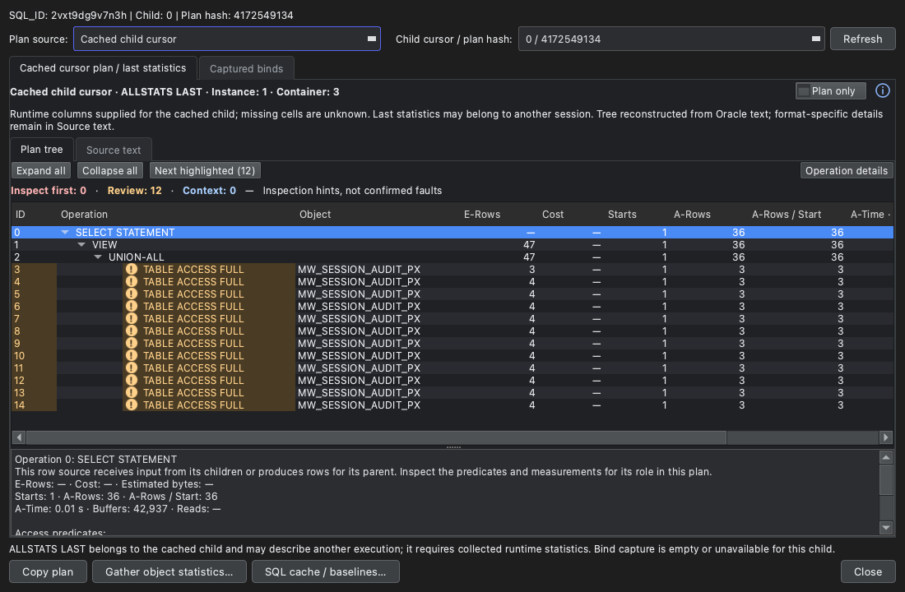
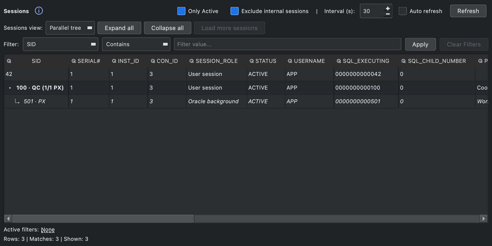
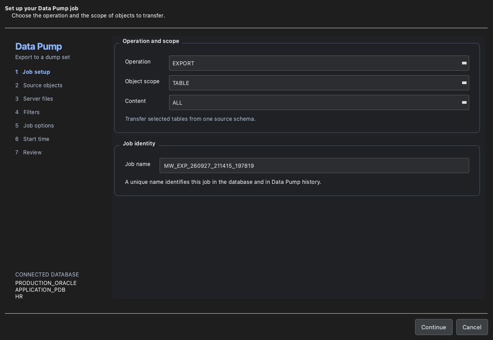

Monitor database activity
Inspect sessions, waits, blockers, memory, I/O and storage. Use the instance dashboard and built-in SQL reports with configurable refresh intervals.
Sessions · Instance dashboard · WaitsA desktop workspace for Oracle
Understand activity. Inspect SQL. Work through database tasks with the relevant details in view.
MODWAI brings Oracle monitoring, diagnostics and selected administration tools into one desktop application, with AI assistance when you choose to use it.
macOS · Windows · Linux
Explore the operation tree, available runtime statistics and captured bind values for a selected cursor.
Plan tree & source textOpen full-size view
Filter active sessions and inspect parallel execution groups before opening the relevant SQL, waits or plan.
Filters & periodic refreshOpen full-size view
Prepare a Data Pump operation, review the generated command and follow server-side jobs and logs.
Oracle DIRECTORY filesOpen full-size view
01 / The everyday workspace
Move between database activity, SQL and diagnostic results without assembling a separate set of tools for each question.
Inspect sessions, waits, blockers, memory, I/O and storage. Use the instance dashboard and built-in SQL reports with configurable refresh intervals.
Sessions · Instance dashboard · WaitsRun statements in tabbed worksheets with bind variables, query history and DBMS_OUTPUT. Filter results, export data and manage transactions explicitly.
Worksheets · Results · CSV & JSONExplore estimated and cached cursor plans, compare a plan with a frozen snapshot and inspect available execution statistics. Highlighted operations are starting points for investigation.
Plan comparison · Cursor context · BindsSample session activity into a local recording, then review waits, active SQL and changes over that interval. Compare recordings when investigating a change. Explore available Statspack reports for historical context.
Local sampling · Review · ComparisonReview checks for instance, SQL and storage conditions, with supporting details and explanations. Results help direct investigation; they need database context.
Findings · Detail queries · ExplanationsBrowse schemas and objects, inspect DDL and source, and review database reports covering users, privileges, Scheduler definitions and available APEX/ORDS metadata.
Object explorer · DDL · Database reportsAvailable views and actions depend on Oracle version, account privileges and the connected database or container.
02 / Beyond observation
Prepare database operations in dedicated workspaces, with the target, settings and command available for review.
Configure server-side exports and imports, inspect source objects in a dump, reuse templates and follow job status and logs.
Dump and log files use Oracle DIRECTORY objects on the server. This is not a file transfer to your desktop.
Inspect automatic maintenance tasks and windows, review optimizer statistics operations and prepare editable scripts for adding tablespace files.
Administrative actions require the relevant database privileges. Review generated SQL before applying a change.
Inspect OCI Base Database systems, metrics and work requests. Prepare supported OCPU changes, backups and one-off scheduled operations through OCI CLI.
Requires OCI CLI configuration and permissions. Scheduled OCI operations need MODWAI to remain running.
03 / Optional assistance
Ask AI to help interpret an execution plan, selected diagnostic results or session recording. Use its response as an explanation or a proposal to investigate.
AI output can be incomplete or incorrect. Review recommendations and generated SQL before use.
Depending on the analysis and settings, prompts may include SQL, object names and diagnostic details. Prompt preview and SQL-sharing controls help you review the context. Subscription verification still requires an online connection.
04 / On your desktop
Download the current release, then connect using your Oracle account. Database access requires an active subscription or trial.
Desktop installer
Download for macOS Open the disk image to install MODWAI.64-bit desktop installer
Download for Windows Install using the setup application.x86-64 application archive
Download for Linux Extract the archive to get started.Extract the archive, keeping its directory structure, then launch the executable:
tar -xzf MODWAI-Linux.tar.gz
./MODWAI/MODWAIA graphical desktop and compatible system libraries are required. If the application does not start, run it from a terminal and include the error when contacting support.
05 / Subscriptions
Personal subscriptions, billed monthly. Select a plan for current pricing and any available trial at checkout.
Core Oracle tools with your own AI provider or a local Ollama instance.
The core tools, with access to AI through the MODWAI service.
For users who also want to inspect and adapt the bundled monitoring queries.
MODWAI Proxy uses credits; the cost of a request depends on the model. Your current allowance is shown in the app. Provider charges for your own API keys are separate. Final pricing and taxes are shown at Paddle checkout.
MODWAI targets Oracle Database 19c and later and includes views for RAC and pluggable databases. Available reports and operations depend on the Oracle version, edition, container and account privileges.
Basic connections use the driver's Thin mode without a separate Oracle Client installation. Thick mode is also available for connections that need Oracle Client features and requires a compatible client installation.
No. MODWAI has its own session sampling and recording workflow. Statspack analysis is also available where Statspack is configured. Oracle ASH and AWR features are separate and require the appropriate Oracle Diagnostics Pack entitlement. Other Oracle operations may also have edition or licensing requirements.
Cloud AI receives the prompt and the diagnostic context included for that analysis, which may contain SQL, object names or diagnostic detail rows. MODWAI Proxy routes this through our backend; own-key connections send it to your provider. A locally hosted Ollama endpoint keeps inference local. Review your settings and prompts before sharing sensitive context.
Monitoring reports read database information. SQL worksheets and administration tools can make changes when you run them with the necessary permissions. Data Pump, maintenance and OCI workflows provide command review steps; OCI also has optional immediate execution settings. AI responses are suggestions for you to review.
After checkout, open Settings → Subscription in MODWAI. Enter the checkout email address, request a registration key and verify the emailed key in the app. Each subscription is for one user.
Let's talk about your setup
Tell us which Oracle environment you use and what you need to do.